Vault 5 · Topical Studies · Charts
Twelve charts on the seven appointed times of Leviticus 23: the prophetic calendar, each feast’s shadow and substance, the long summer of the present age, and all seven at a glance. Click any chart to see it full size, or download them all.
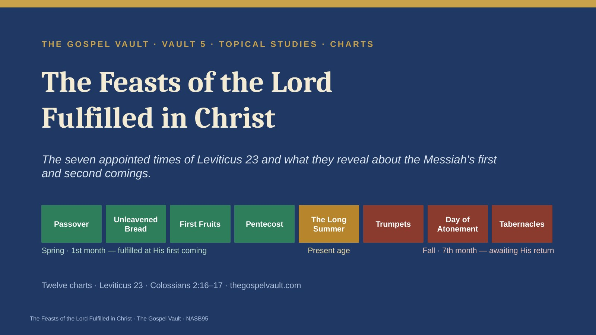
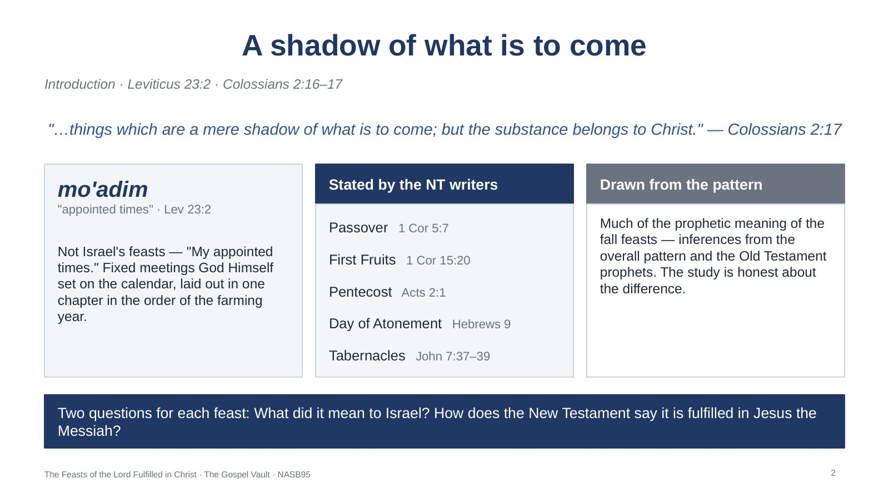
Introduction · Leviticus 23:2 · Colossians 2:16–17
God called the holy days His own: "My appointed times are these" (Lev 23:2). Mo’adim means appointed times or fixed meetings. For fifteen centuries Israel kept them in faith, mostly without knowing each was also a picture. A shadow is real, but it is not the thing itself — it has the outline of the body that casts it, and it always arrives first. Method: some connections are made explicitly by the New Testament (Passover, First Fruits, Pentecost, Atonement, Tabernacles); others, especially the fall feasts’ prophetic meaning, are inferences. The framework is the dispensational one (Fruchtenbaum; Howard and Rosenthal): spring feasts fulfilled at the first coming, fall feasts awaiting the second. A covenant-theology alternative reads all the feasts as fulfilled in Christ and the church without a future program for national Israel (see paper, n. 4).
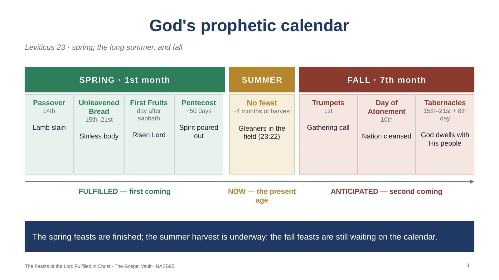
Leviticus 23 · spring, the long summer, and fall
Seven feasts in a single chapter, in the order the agricultural year unfolds — four in the spring, a long summer harvest, and three in the fall. If the spring feasts were fulfilled with remarkable precision at Christ’s first coming, the long gap before the fall feasts corresponds naturally to the present age, between His first and second comings. This is the dispensational framework the paper follows (Fruchtenbaum; Howard and Rosenthal; Pentecost, Things to Come).
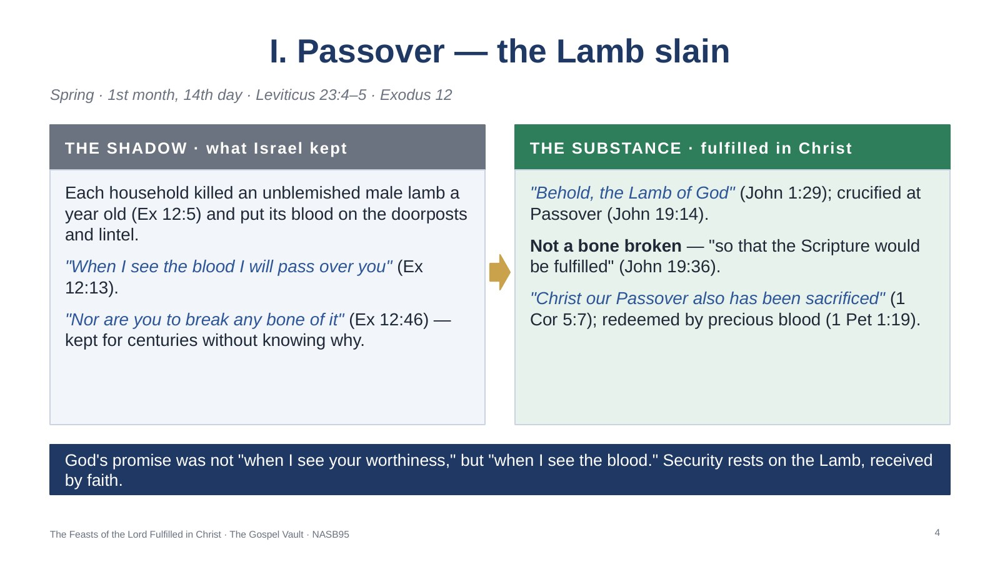
Spring · 1st month, 14th day · Leviticus 23:4–5 · Exodus 12
Passover comes first because redemption comes first. What spared a household was not the character of the people inside, the strength of their faith, or the quality of their obedience — it was the blood on the door. Jesus was crucified at Passover; His legs were not broken (John 19:36); at the Last Supper, itself a Passover meal, He reinterpreted the bread and cup around His own body and blood (Luke 22:19–20). The believer’s security does not rest on how well he has performed since he believed, but on the finished sacrifice of the Lamb. For further study: Exodus 12:3–11; Numbers 9:12; Psalm 34:20; Isaiah 53:7; Matthew 26:17–29; John 1:36; Revelation 5:6–9.
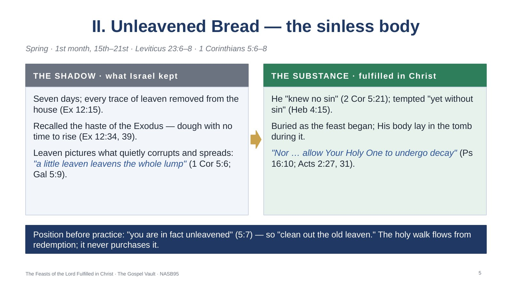
Spring · 1st month, 15th–21st · Leviticus 23:6–8 · 1 Corinthians 5:6–8
Paul turns the feast toward the believer, and the order of his words matters. In 1 Cor 5:7 he has already told a church with serious moral problems that they are unleavened; the call to clean out the old leaven is not a condition for becoming God’s people but an invitation to live out what they already are. This is the distinction between the believer’s position, settled forever by the Passover Lamb, and his practice, which grows as he walks in the truth. Unleavened Bread follows Passover on the calendar for a reason. For further study: Exodus 12:15–20; 13:6–8; Matthew 16:6–12; Luke 12:1; John 6:35; 1 Peter 2:22.
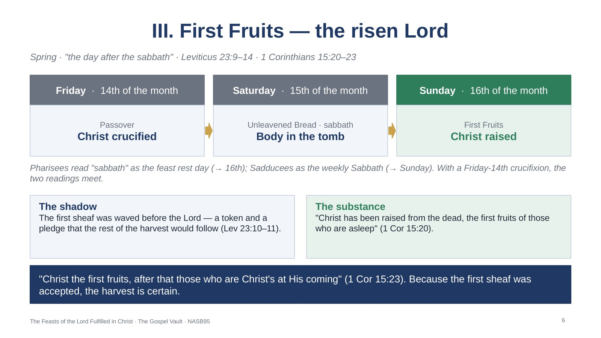
Spring · "the day after the sabbath" · Leviticus 23:9–14 · 1 Corinthians 15:20–23
When Israel reaped the barley harvest, the first sheaf was not theirs to eat; until it was offered, no one ate of the new crop (Lev 23:14). On the first day of the week the women found the tomb empty — the day Israel’s priest lifted the first sheaf before God was the day God raised His Son. Christ’s resurrection is the first installment of the same resurrection every believer will share. The sabbath dispute is recorded in the Babylonian Talmud, Menachot 65a–66a (paper, n. 5). For further study: Luke 24:1–7; John 20:1; Romans 8:11; Colossians 1:18; Revelation 1:5.
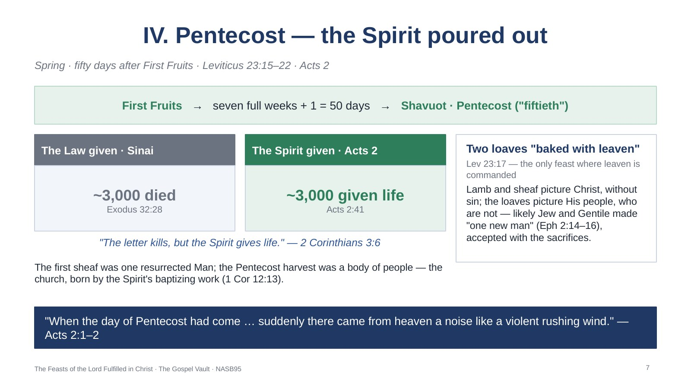
Spring · fifty days after First Fruits · Leviticus 23:15–22 · Acts 2
From First Fruits Israel counted seven full weeks, then presented a new grain offering (Lev 23:15–16). Later Jewish tradition connected Shavuot with the giving of the Law at Sinai (Talmud, Pesachim 68b). Jesus told the disciples to wait for what the Father had promised (Acts 1:4–5). Dispensational theology identifies this day as the birth of the church (Ryrie, Basic Theology). The two leavened loaves were accepted with the leaven still in them because they were presented with the sacrifices (Lev 23:18) — so are we. For further study: Joel 2:28–29; John 7:39; 14:16–17; Acts 1:8; 2:16–18; 11:15–16; Ephesians 1:13–14.
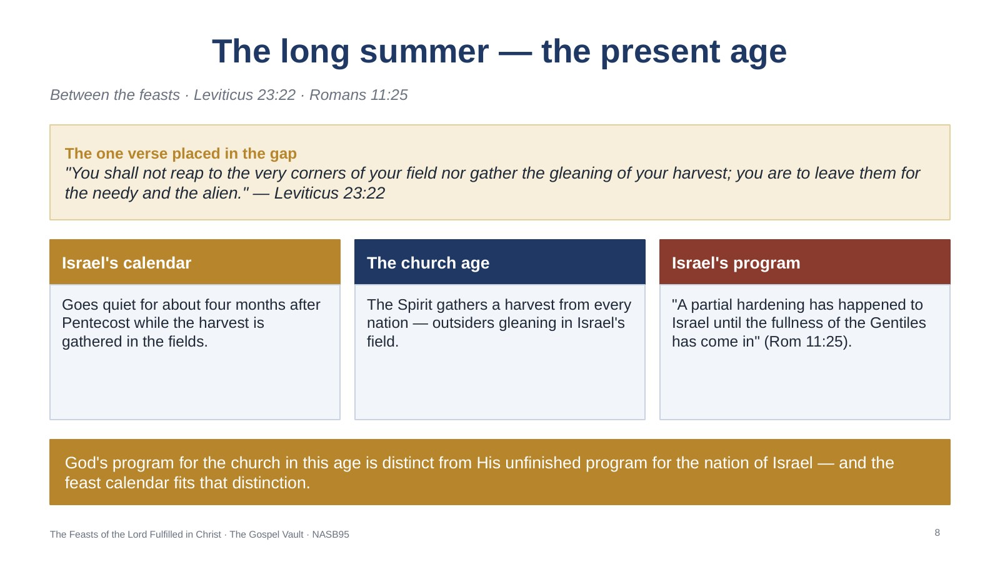
Between the feasts · Leviticus 23:22 · Romans 11:25
After Pentecost there is no appointed feast for roughly four months; then three feasts come in close succession in the seventh month. Between the instructions for Pentecost and Trumpets, a single verse interrupts the list with a harvest law for the needy and the alien — a fitting picture of an age in which Gentiles are being brought in. See J. Dwight Pentecost, Things to Come, on the church age as an unforeseen interval in Israel’s prophetic program. For further study: Luke 21:24; Acts 15:14–16; Romans 11:11–27; Ephesians 3:4–6; Matthew 9:37–38.
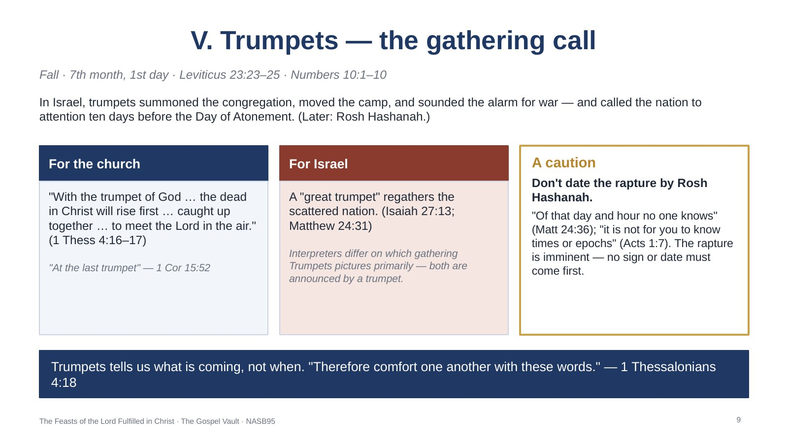
Fall · 7th month, 1st day · Leviticus 23:23–25 · Numbers 10:1–10
Scripture gives this feast less explanation than any other. The New Testament never says in so many words "this fulfills the Feast of Trumpets," but it repeatedly attaches a trumpet blast to the gathering of God’s people at the end of the age. Because the spring feasts were fulfilled on their calendar days, some have tried to predict the rapture by Rosh Hashanah; Scripture closes that door. Pretribulational writers stress imminence (Walvoord, The Rapture Question). For further study: Numbers 29:1; Joel 2:1; Zechariah 9:14; 1 Corinthians 15:51; Titus 2:13; Revelation 11:15.
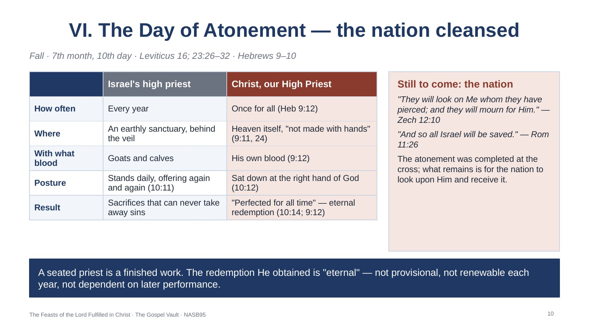
Fall · 7th month, 10th day · Leviticus 16; 23:26–32 · Hebrews 9–10
Once a year the high priest passed behind the veil with the blood of a sacrifice and sprinkled it on the mercy seat; the scapegoat carried the nation’s sins into the wilderness (Lev 16). It was the only day Israel was commanded to fast. Hebrews reads it as fulfilled in Christ’s single, finished work (Heb 9:11–12; 10:11–14; see Walvoord and Zuck, Bible Knowledge Commentary). The day also carried a national dimension that awaits the Messiah’s return (Zech 12:10; Rom 11:26; Pentecost, Things to Come). For outreach: in Pew’s 2020 survey, 46% of American Jews said they fasted for all or part of the previous Yom Kippur — these appointed times are natural, respectful starting points for conversation. For further study: Leviticus 16:15–22; Isaiah 53:4–6; Romans 3:25; Hebrews 9:24–28; 10:19–22; Zechariah 13:1; Revelation 1:7.
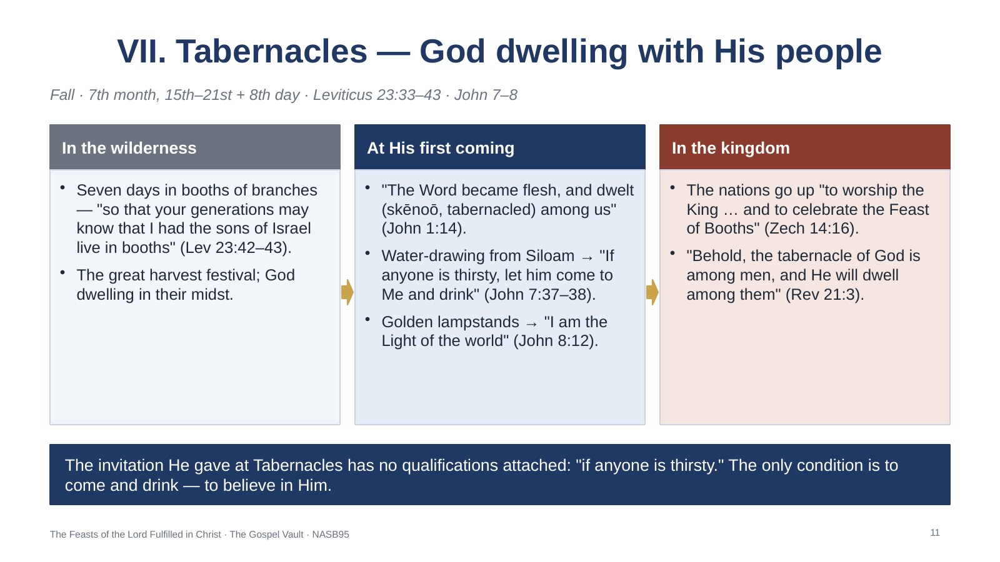
Fall · 7th month, 15th–21st + 8th day · Leviticus 23:33–43 · John 7–8
Five days after the Day of Atonement came the most joyful feast of the year. By Jesus’ day a priest drew water from the Pool of Siloam each morning and poured it at the altar; each evening great golden lampstands lit the Court of the Women (Mishnah Sukkah 4:9; 5:1–4; Edersheim, The Temple, ch. 14). In the middle of this feast (John 7:2) Jesus used both ceremonies to describe Himself. John explains the living water was the Spirit, given after He was glorified (7:39). Skēnoō means to pitch a tent, to tabernacle (Thayer). Tabernacles is the one feast the prophets say the nations themselves will keep. Note on Hanukkah: the Feast of the Dedication (John 10:22) is not one of the seven, but there Jesus said, "I and the Father are one" (10:30). For further study: Exodus 25:8; Nehemiah 8:14–17; Isaiah 12:3; 9:2; Matthew 17:4; John 4:14; Revelation 7:9–17.
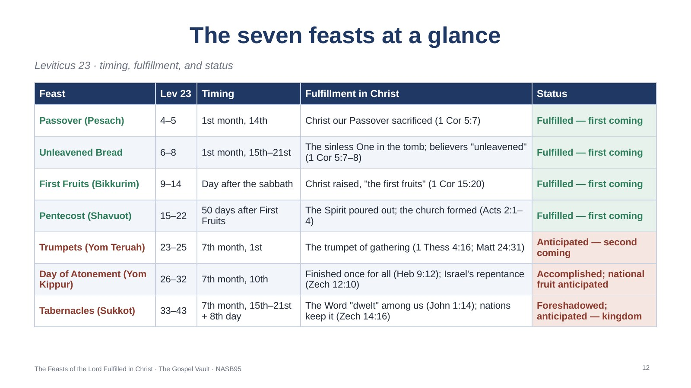
Leviticus 23 · timing, fulfillment, and status
The table gathers the seven appointed times of Leviticus 23, their place in Israel’s calendar, and the New Testament fulfillment each one points to. Green rows (spring) are fulfilled at the first coming; red rows (fall) await His return — with the Day of Atonement already accomplished at the cross and its national fruit still ahead.
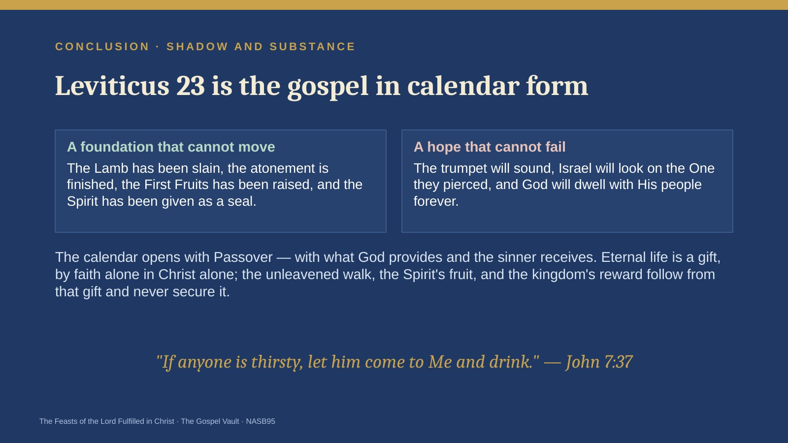
Conclusion · Shadow and substance
Read as a whole, Leviticus 23 begins with a slain lamb whose blood alone shields from judgment; continues with a sinless life laid in the tomb, a first sheaf lifted up on the first day of the week, and a harvest gathered by the Spirit fifty days later; pauses through a long summer in which outsiders glean in Israel’s field; and ends with a trumpet, a nation’s repentance, and God living among His people in joy. The shadows were accurate. The substance belongs to Christ. And the invitation Jesus gave on the great day of the feast still stands, unchanged and unconditional.
The PowerPoint shows each chart as a full-slide picture, with the notes above on every slide.